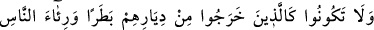

46. Allah’a ve Rasûlü’ne itaat edin, birbirinizle çekişmeyin. Sonra korkuya
kapılırsınız da devletiniz (gücünüz) gider. Bir de sabredin. Çünkü, Allah
sabredenlerle beraberdir.”
Yaptığınız ve terk ettiğiniz her hususta özellikle cihad ve savaşta sabit kadem olmak
konusunda “Allah’a ve Rasûlü’ne itaat edin,” Bedir ve Uhud’da yaptığınız gibi fikir
ayrılığına düşerek “birbirinizle çekişmeyin. Sonra korkuya kapılırsınız” yani tembel,
zayıf, gevşek ve korkak olursunuz “da devletiniz” yani gücünüz, şevketiniz “gider.”
Âyetteki “
” kelimesi, istiâre olarak devlet anlamında kullanılmıştır. Çünkü devlet
ve kuvvet, işini yürütme ve yerine getirme konusunda esen ve cereyan eden rüzgara
benzer. Bu kelimenin hakîkî mânâsının kastedildiği de söylenmiştir. Çünkü zafer ancak
Allah Teâlâ’nın gönderdiği bir rüzgarla olur ki ona zafer rüzgarı denir.
Rivayete göre Hendek Gazvesi günü Kureyş, Gatafan, Kurayzaoğulları ve
Nadîroğulları Medîne’yi muhasara ettiklerinde şiddetli bir sabâ rüzgarı esmiş,
düşmanın çadırlarını söküp tencerelerini devirmiş, onlar da kaçıp gitmiştir. Bunun
üzerine Efendimiz (a.s.): “Ben sabâ rüzgarı ile yardım gördüm, Âd kavmi de batı
rüzgarı ile helâk edildi.”[38] buyurmuştur. Sabâ rüzgarı doğudan esen bir rüzgardır. “
” ise sabâ rüzgarının tam aksi istikametten esen rüzgardır. Kasdedilen şudur:
Rüzgar emr-i ilâhîye âmâdedir. Bazen yardım için gelir, bazen de helâk için.
Mesnevî’de şöyle denilmiştir:
Yerdeki ve gökteki tüm zerreler
İmtihan ânında Hakkıın askerleridir
Rüzgarı gördün, ne yaptı Âd kavmini
Suyu gördün, tûfanda neler etti!
“Bir de” harbin zorlukları ve müşriklerle savaş konusunda “sabredin.” Onlara
arkanızı dönüp kaçmayın. “Çünkü, Allah” yardım ve himâyesiyle “sabredenlerle
beraberdir.” “ ” (beraberdir) kelimesinden bizzat sabretmeleri bakımından onların bu
konuda asîl oldukları anlaşılmaktadır. Bu bakımdan ise onlar kendilerine uyulan metbû
kimselerdir. Allah Teâlâ’nın beraberliği, yardım ve imdad etmesi bakımındandır.
47. Çalım satarak, insanlara gösteriş yaparak ve Allah yolundan alıkoymak üzere
yurtlarından çıkanlar gibi olmayın. Allah, onların yaptıklarını kuşatmıştır.